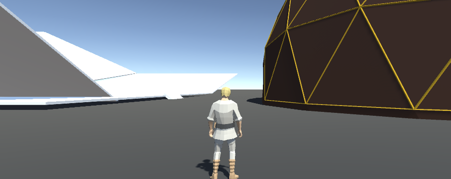

Le jeu se déroule dans une cité inspirée du genre steampunk. Les
joueurs, des pirates des airs, débarquent d’un bateau flottant et
atterrissent dans une cité pour collecter des trésors et du mana
pour leurs armes. Mais du fait de leur félonie, ils ne pourront
s’empêcher de s’attaquer à leurs pairs. Notre univers reprend le
battle royale et le réinvente avec un penchant vers la ruse et l’agilité. Beaucoup d’idées ont été évoquées durant la préparation du
concept de notre jeu et on a filtré celles qui garantiraient une
expérience de jeu inédite et prenante.